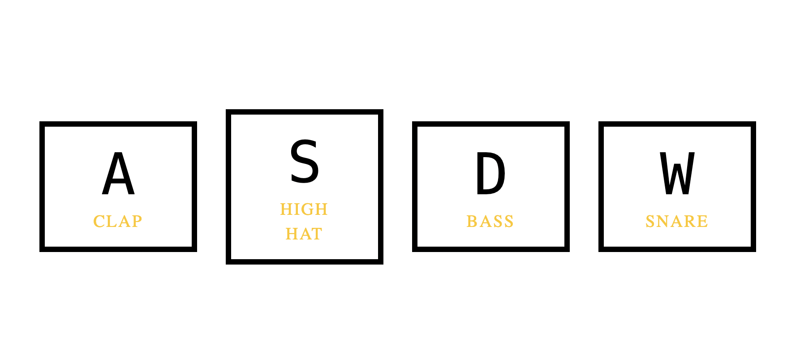

03-Drum kit
In this challange I developed a basic drum kit using JavaScript, HTML, and CSS, with guidance from Amer.


04-Pokemon game with API
Creating a Pokémon game using the PokéAPI has provided valuable experience in using RESTful APIs, developing web applications with HTML, CSS, and JavaScript, and managing an interactive project.